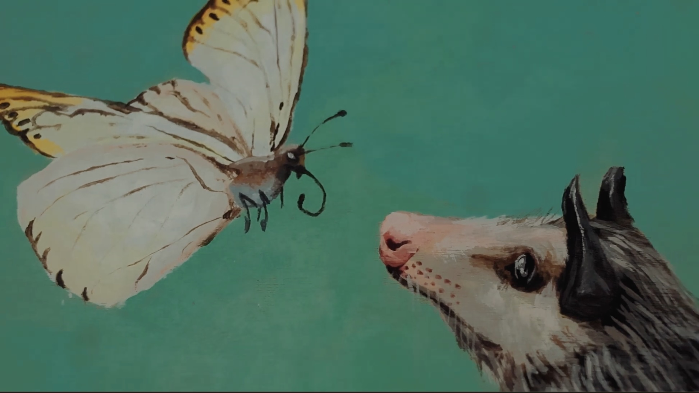
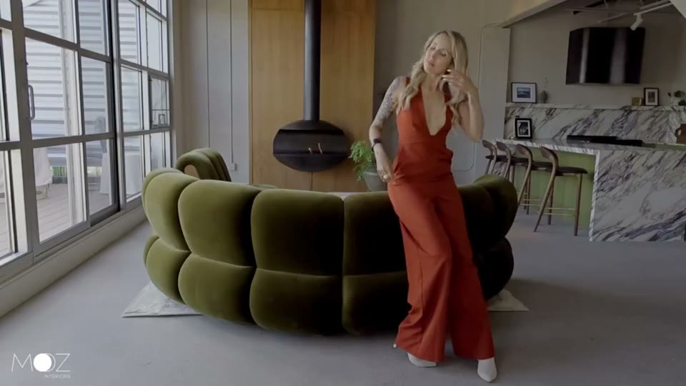

Anthony Brass
Inside Anthony’s home studio: nature-inspired paintings, his process, and his story in his own words.
March 4, 2024 · Bobby: A-camera and editLarry: B-camera · Narration written by AnthonyWatch the film ↗

Two films from behind the camera.

Inside Anthony’s home studio: nature-inspired paintings, his process, and his story in his own words.
March 4, 2024 · Bobby: A-camera and edit
Moving through the textures, light, and character of a Detroit-designed space.
July 1, 2024 · Bobby: A-camera and edit